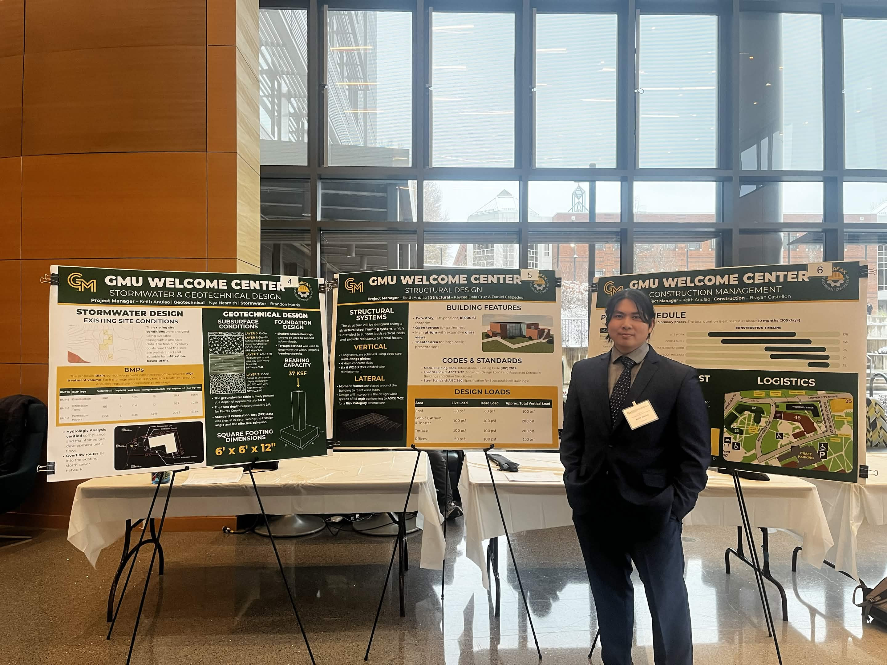
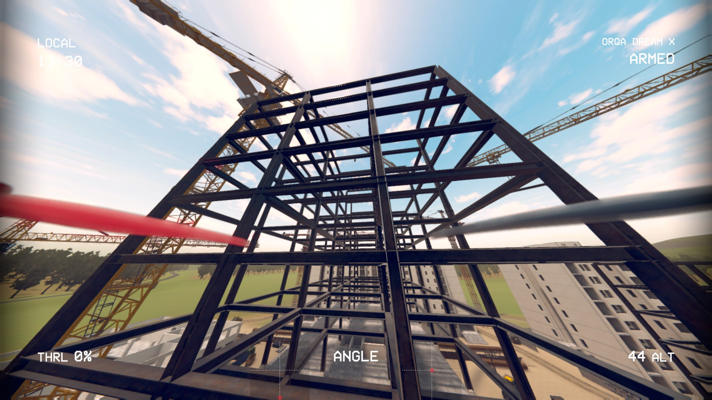

Professional Summary
Hello, I'm Keith L. Anulao — a George Mason University Civil Engineering graduate and Spatial Analyst. I combine traditional civil infrastructure fundamentals with advanced Python data pipelines, ArcGIS Pro spatial modeling, and FAA Part 107 drone operations to build smarter, data-driven engineering solutions.
GMU Senior Design Showcase
Presenting our multidisciplinary engineering technical plan and deliverables.

George Mason University — Civil Engineering Capstone Presentation
Education
Bachelor of Science in Civil Engineering | George Mason University (December 2025)
Honors College Graduate | Dean's List (Fall 2025)
Licenses & Certifications
CompTIA Security+ | Jan 30, 2025 - Jan 30, 2028
FAA Part 107 Remote Pilot | Jun 23, 2026 - Jun 30, 2028
Advanced Pilot Training & Simulation
Training in Acro (manual) and Angle (self-leveling) modes for complex structural steel inspections.

FPV.SkyDive — Simulated Structural Steel Inspection
Did You Know? Per 14 CFR § 107.12, a commercial drone's flight controls can be manipulated by a non-certified operator as long as an FAA-certified Remote Pilot in Command is actively supervising with immediate takeover authority.
Core Technical Skills
- Modeling & Design: ArcGIS Pro, AutoCAD, Synchro, Spatial Modeling
- Programming & Data: Python (Pandas, Matplotlib, Tkinter), SQL Basics, Automated Data Pipelines
- Software & Operations: MS Excel, MS Word, Advanced FPV / Acro-Mode Drone Flight Operations
- Professional: Technical Writing, Project Management, Quality Control (QC), Lead Technical Editing